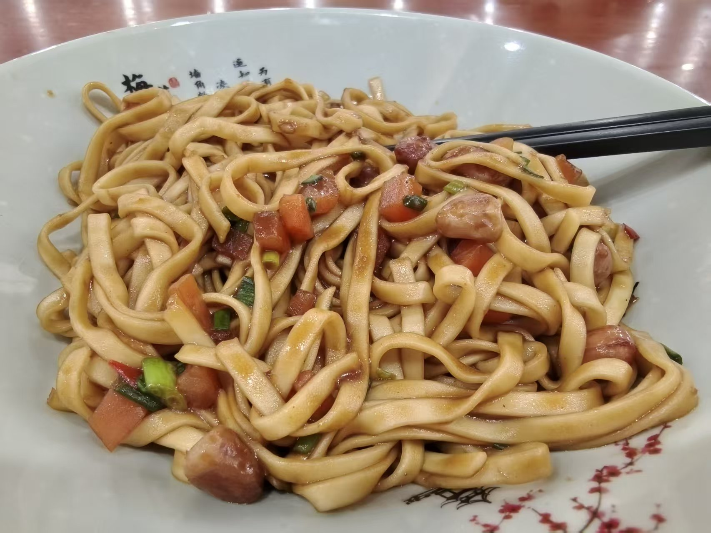
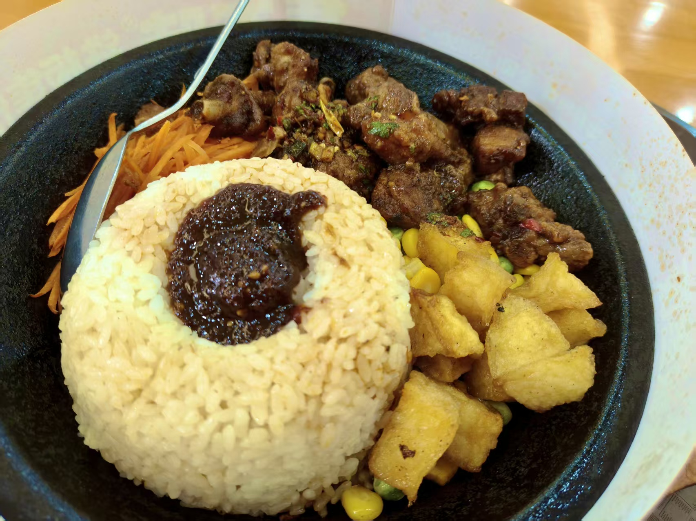
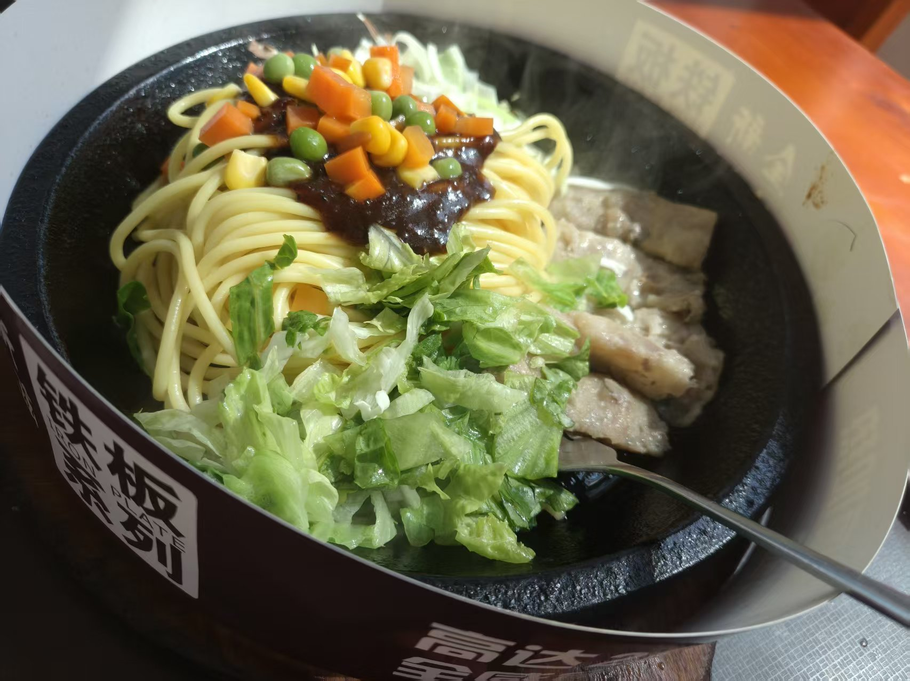
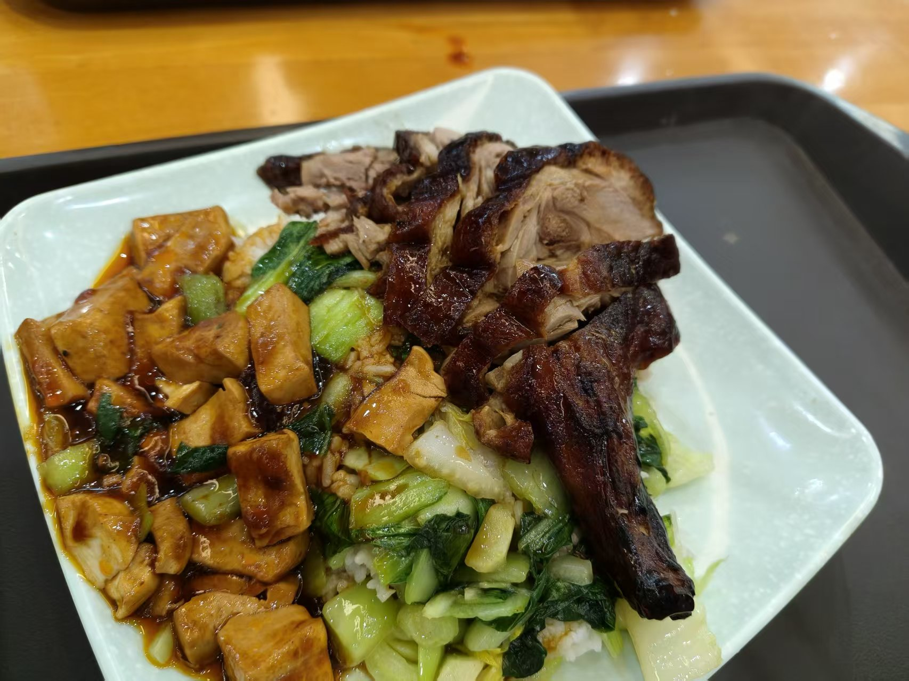
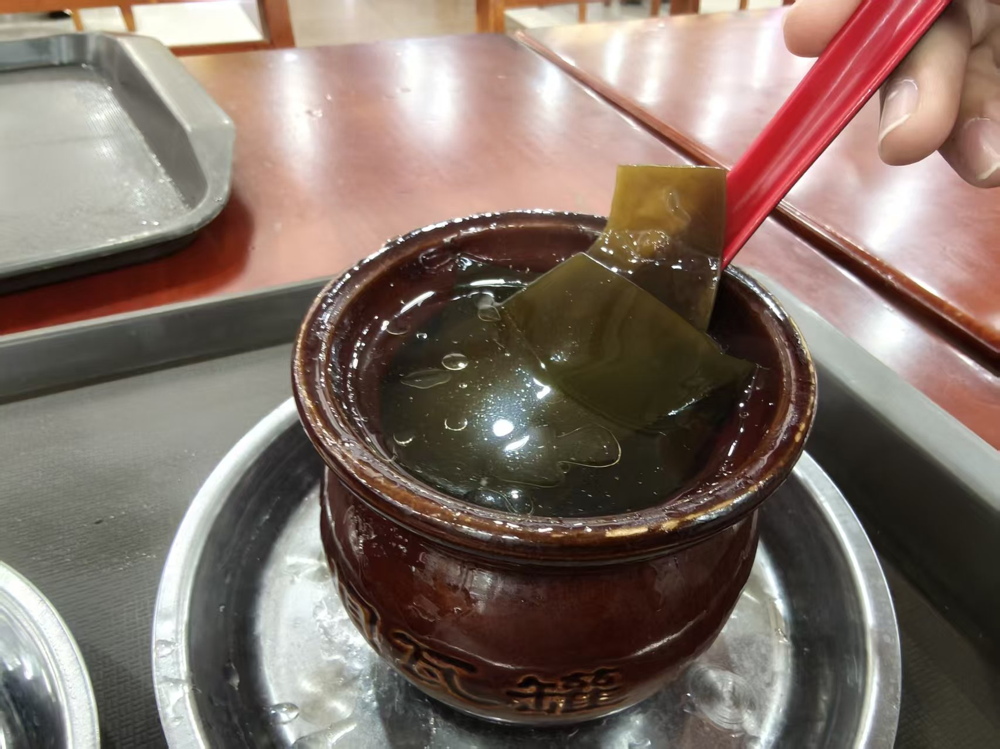
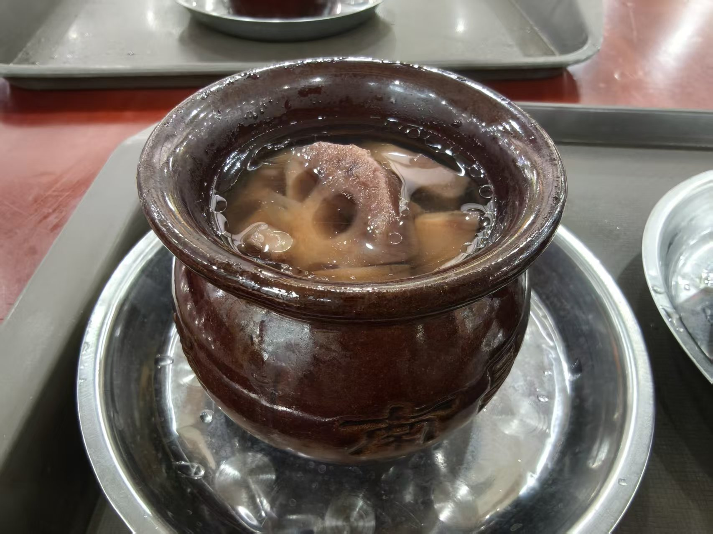
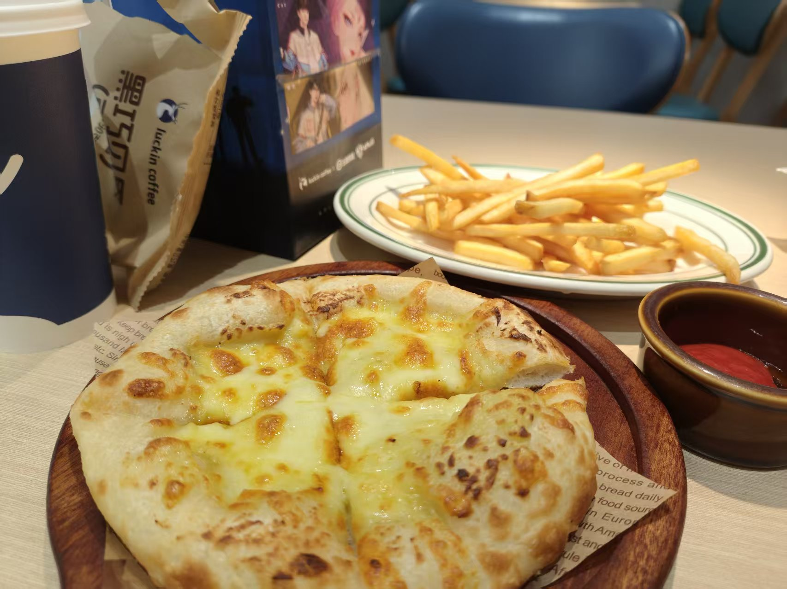
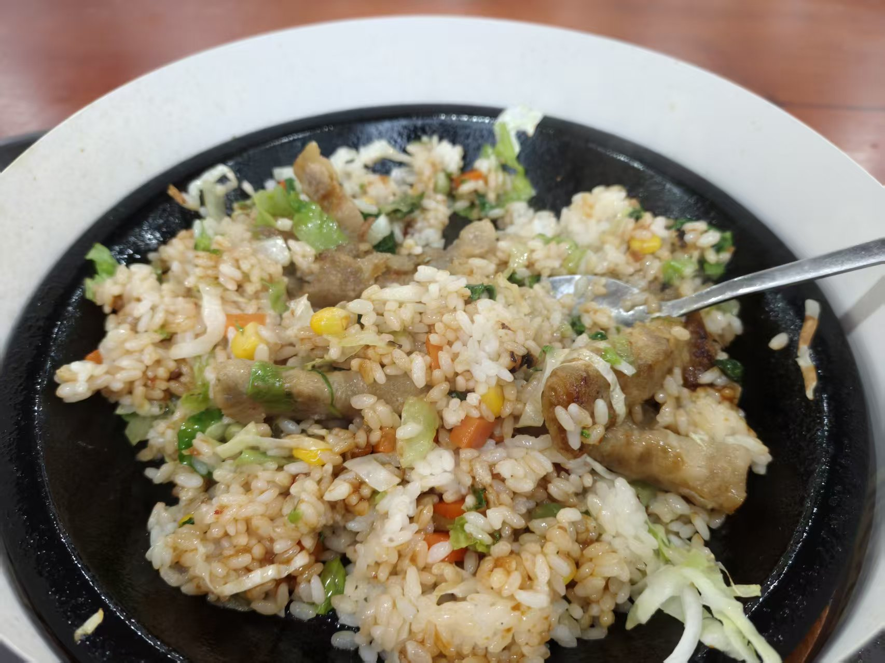

延伸阅读：华科大美食
想继续看看华科美食主题，可以阅读这篇你提供的微信公众号文章。页面中的照片说明依据图片内容整理，并非公众号原文摘录。
打开微信公众号文章 ↗ 喻园拾光A LITTLE CAMPUS GUIDE
喻园拾光A LITTLE CAMPUS GUIDE

A LITTLE CAMPUS MENU
照片记录的是眼前这一餐。下面的名字和介绍只按画面里的食材与做法来写，不猜具体店名；每个人的校园菜单，也可以从自己最喜欢的那一口开始。
米粉浸在热汤里，配上青菜与小料；天气转凉时，来一碗格外熨帖。

面条裹着酱汁，点缀着切碎的配菜。拌匀之后，每一口都有不同的口感。

一份米饭搭配几样荤素配菜，分量实在，适合课间补充能量。

面、肉片和绿叶菜装在一盘，荤素搭配看得见，吃起来也更有满足感。

切片烧肉搭配米饭和几样热菜，颜色丰富、分量扎实，是忙碌日子里踏实的一餐。

晶莹软嫩的甜品看起来清清爽爽，饭后或午后加一点甜，给自己放个小假。

热汤盛在小锅里，咕嘟的热气很有冬日氛围；慢慢喝，也慢下来歇一会儿。

披萨配薯条，切成小份就能一起分享。和朋友边吃边聊，平常的晚餐也热闹起来。

米饭炒得粒粒分明，搭着肉丁与蔬菜；简单的一盘，也能吃得很满足。
吃饭不必赶着打卡，按自己的口味和需要选一餐就好。希望这些照片，也能让你想起校园里那些热气腾腾的日常。
想继续看看华科美食主题，可以阅读这篇你提供的微信公众号文章。页面中的照片说明依据图片内容整理，并非公众号原文摘录。
打开微信公众号文章 ↗